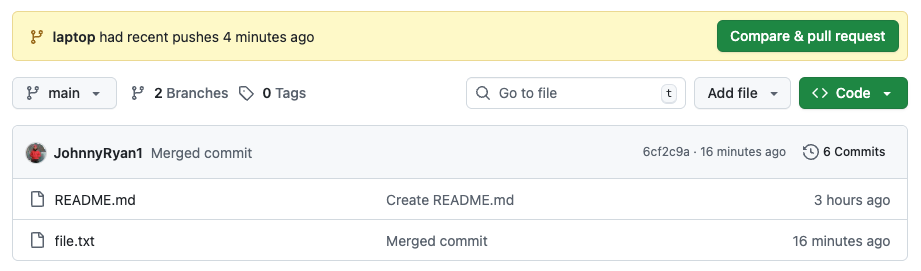
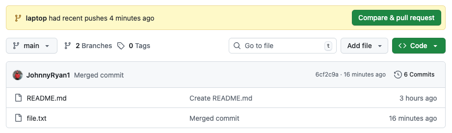

Code management#
In this demo we will learn about using version control to collaborate on programming projects.

We’ve all been in this situation before: it seems unnecessary to have multiple nearly-identical versions of the same document.
The danger of losing good versions often leads to the problematic workflow illustrated in the PhD Comics cartoon at the top of this page.
Collaborative writing with traditional word processors is cumbersome. Either every collaborator has to work on a document sequentially (slowing down the process of writing), or you have to send out a version to all collaborators and manually merge their comments into your document. The track changes option can highlight changes for you and simplifies merging, but as soon as you accept changes you will lose their history. You will then no longer know who suggested that change, why it was suggested, or when it was merged into the rest of the document.
Version control systems (VCS) start with a base version of the document and then keeps track of changes you make each step of the way
VCS are essential for developing software and carrying out projects with a lot of code
VCS does not care about file names, intead records who, what, when, and why changes were made to files

Git#
One of the most popular VCS tools in use today is called
gitIt is a command-line tool that is installed locally
It is free and open-source software

GitHub#
GitHub is a web-based hosting service for
gitProvides a graphical user interface
Maintained by Microsoft
There are other web-based hosting services (e.g. GitLab and Bitbucket)

Why do we use version control systems?#
Security#
VCS acts like an unlimited ‘undo’ thereby protecting source code from yourself and others
e.g. catastrophe, human error, and unintended consequences

Collaboration#
VCS enables many people to work on the same project at the same time
Teams working in parallel accelerates project development

Community#
Impossible for junior developer to mess up a big project
Since it is so robust this encourages open-source experimentation and development
GitHubhas really emerged as the industry standard

Drawbacks of version control#
Difficult to learn
{kind=link}
Some basic terms#
Fork#
Copy a repository to your GitHub.com account
Clone#
Retrieve a repository from GitHub.com to local machine
Commit#
Create a snapshot of the contents of your file tree
Push#
Upload your local changes to the central repository, along with necessary commits and objects
Pull#
Fetch the contents of the central repository and immediately merge to your local copy
Collaborating with GitHub#
Centralized workflow
Feature branch workflow
Forking workflow
Others (e.g. Gitflow workflow)
Centralized workflow#
All team members clone a single, central repository to their local machine
One team member makes changes (e.g. add, modify, delete) to files on their local machine
Periodically, they should commit these changes (i.e. take a snapshot) with a short message saying what they did
When they are finished working, they can push their changes back to the central repository

But now when another team member (who has also been working on the project) tries to push their changes, Git will refuse the request because the their local history has diverged from the central repository

The team member must first pull the most recent changes in the central reposistory into their local repository
{kind=link}
Team member then resolves any conflicts between their local version and the central repository.
Once finished, team member can then commit and push their changes to the central repo

Advantages#
Simplest workflow
Works well for small teams
Disadvantages#
If someone breaks the central repo, it breaks for everyone
Potential for a lot of conflicts
One solution is to avoid working on the same files
But this does not scale well as teams increase in size
Feature branch workflow#
The logical extension of the centralized workflow is to use branches
In this workflow, all feature development takes place in a dedicated branch instead of the main branch
This means that main branch never contains broken code - a huge advantage for continuous integration environments
All team members clone a single, central repository to their local machine
Team members immediately create a new branch to make their changes

When team members finish their changes, they push their branch to the central repository. The central repository will now contain multiple branches.
Therefore, unlike the centralized workflow, this push will never cause conflicts
Team members then submit a pull request on GitHub.com asking to merge their new feature (or branch) into the main codebase, all team members will be notified automatically

Team leader reviews pull request, discusses any changes with team members
Once everything looks good, team leader merges new feature into main codebase
Team member can then delete their branch
 

{kind=link}


Advantages of feature branch workflow#
Promotes collaboration with team members through pull requests and merge reviews
Teams can work in parallel on same files so good approach for larger teams
Main branch never contains broken code
Guiding framework for other, more complex worflows
Instead of using a single, central repository, forking workflows give every team member their own central repository
Team members can tinker with their forked repository as they wish without disturbing anyone else
When ready they can push to their private central repository and file pull requests if they think their changes are ready to be integrated to main codebase

Provides a little more power to the team leader because they are the only person that can push to the official repository
Allows the team leader to accept/reject commits from any developer without giving them write access to the main codebase
Often used for large open-source projects
Good practices#
Agree on a workflow#
It is important that teams establish shared patterns of collaboration
If a team doesn’t agree on a shared workflow it can lead to inefficient communication when it comes time to merge branches
Commit often#
Commits are easy to make and provide opportunities to revert or undo work
They should be made frequently to capture updates to a code base
Ensure you’re working from latest version#
VCS enables rapid updates from multiple developers
It’s easy to have a local copy of the codebase fall behind the global copy
Make sure to
git pullorfetchthe latest code before you start working on project
Make detailed notes#
It is important to leave descriptive explanatory commit log messages. These commit log messages should explain the “why” and “what” that encompass the commits content.
These log messages become the canonical history of the project’s development and leave a trail for future contributors to review.
Use branches#
Branches enable multiple developers to work in parallel on separate lines of development
Branches should be used frequently as they are quick and inexpensive.
When development on a branch is complete it should be merged into the main line of development and then deleted
There are two ways to use git, the command-line and GitHub Desktop. Most students prefer to use the desktop version to begin with but we’d be happy to provide guidance on the command-line version during labs.
GitHub Desktop#
We will talk a bit more about git later in the lecture but, to continue setting up our project, go ahead and install GitHub Desktop.
Open GitHub Desktop → Add an Existing Repository from your Hard Drive…
Select Choose… and navigate to your project folder
Respond to this warning by clicking create a repository
Leave everything as is and Create Repository
Now we can Publish repository on Github.com by clicking the big blue button. If you signed up for an educational GitHub account we should able to tick the box to Keep this code private and click Publish Repository again.
GitHub.com#
If we navigate to github.com on a web browser, sign in, and navigate to our profile, there should be a new repository that contains our files (just an requirements.txt and .venv folder for now).
Basic usage#
In line with our “learn by doing” mantra, we will demonstrate the basics of version control with GitHub using a demo.
Add a new file#
Make a new text file using Notepad on Windows or TextEdit on MacOS called
README.md, add some random text, and save.In GitHub Desktop we will see 1 changed file.
Type in “Added README” in the Summary box in the lower left → Commit to main.
If we navigate to github.com, we will see this new file.
Make some changes#
Now make some changes to the text in the README.md file, save, and close. Again, we will see 1 changed file in GitHub Desktop.
Undo the changes#
Type in “Changed README” in the Summary box in the lower left and Commit to main again.
Click the History tab (next to Changes)
Right-click the Changed README commit and click Revert Changes in Commit…
If we navigate to the README.md file, we will find that the changes we made have been deleted. We have successfully used git in a practical way!